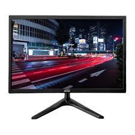

O que é um CPU?

conjunto de componentes lógicos de um computador ou sistema de processamento de dados; programa, rotina ou conjunto de instruções que controlam o funcionamento de um computador; suporte lógico.
O que é um Armazenamento?
conjunto de componentes lógicos de um computador ou sistema de processamento de dados; programa, rotina ou conjunto de instruções que controlam o funcionamento de um computador; suporte lógico.
O que é um Memória?
conjunto de componentes lógicos de um computador ou sistema de processamento de dados; programa, rotina ou conjunto de instruções que controlam o funcionamento de um computador; suporte lógico.
O que é um Fonte de alimentação?
conjunto de componentes lógicos de um computador ou sistema de processamento de dados; programa, rotina ou conjunto de instruções que controlam o funcionamento de um computador; suporte lógico.
O que é um Teclado?

conjunto de componentes lógicos de um computador ou sistema de processamento de dados; programa, rotina ou conjunto de instruções que controlam o funcionamento de um computador; suporte lógico.
O que é um Monitor de vídeo?
conjunto de componentes lógicos de um computador ou sistema de processamento de dados; programa, rotina ou conjunto de instruções que controlam o funcionamento de um computador; suporte lógico.
O que é um Mouse?
conjunto de componentes lógicos de um computador ou sistema de processamento de dados; programa, rotina ou conjunto de instruções que controlam o funcionamento de um computador; suporte lógico.
O que é um Impressora?
conjunto de componentes lógicos de um computador ou sistema de processamento de dados; programa, rotina ou conjunto de instruções que controlam o funcionamento de um computador; suporte lógico.
O que é um Plotter?
conjunto de componentes lógicos de um computador ou sistema de processamento de dados; programa, rotina ou conjunto de instruções que controlam o funcionamento de um computador; suporte lógico.
O que é um Scanner?
conjunto de componentes lógicos de um computador ou sistema de processamento de dados; programa, rotina ou conjunto de instruções que controlam o funcionamento de um computador; suporte lógico.
O que é um Gabinete?
conjunto de componentes lógicos de um computador ou sistema de processamento de dados; programa, rotina ou conjunto de instruções que controlam o funcionamento de um computador; suporte lógico.
O que é um Web Cam?

conjunto de componentes lógicos de um computador ou sistema de processamento de dados; programa, rotina ou conjunto de instruções que controlam o funcionamento de um computador; suporte lógico.
O que é um Caixas de som?
conjunto de componentes lógicos de um computador ou sistema de processamento de dados; programa, rotina ou conjunto de instruções que controlam o funcionamento de um computador; suporte lógico.
O que é um Microfone?
conjunto de componentes lógicos de um computador ou sistema de processamento de dados; programa, rotina ou conjunto de instruções que controlam o funcionamento de um computador; suporte lógico.
O que é um Head Set?
conjunto de componentes lógicos de um computador ou sistema de processamento de dados; programa, rotina ou conjunto de instruções que controlam o funcionamento de um computador; suporte lógico.
O que é um Interfaces sem fio?
é um componente eletrónico que permite a comunicação entre dispositivos utilizando ondas de rádio ou outras formas de radiação eletromagnética, em vez de cabos físicos.
O que é um Áudio?
representação sónica do som, abrangendo a gravação, transmissão, reprodução e o sinal sonoro em si, que pode ser analógico ou digital.
O que é um Rede (Ethernet)?
tecnologia de conexão com fio usada para criar uma rede local (LAN) (LAN), conectando computadores, impressoras e outros dispositivos físicos através de um protocolo e cabos (como cabo Ethernet RJ45) para a troca de dados de forma estável, rápida e segura.
O que é um VGA?
significa Video Graphics Array e refere-se a um padrão de interface analógica e um conector de 15 pinos usados para conectar computadores a monitores e projetores.
O que é um HDMI?
é um cabo e uma tecnologia que transmite sinais digitais de áudio e vídeo de alta qualidade entre dispositivos eletrônicos.
O que é um USB?
é um padrão de tecnologia que permite a conexão, comunicação e transferência de dados e energia entre computadores e diversos dispositivos eletrónicos, como ratos, teclados, impressoras e smartphones.